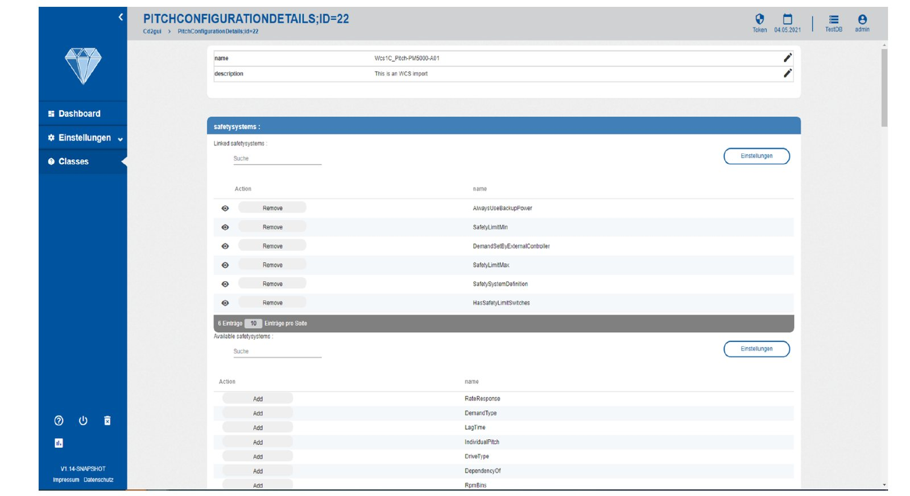
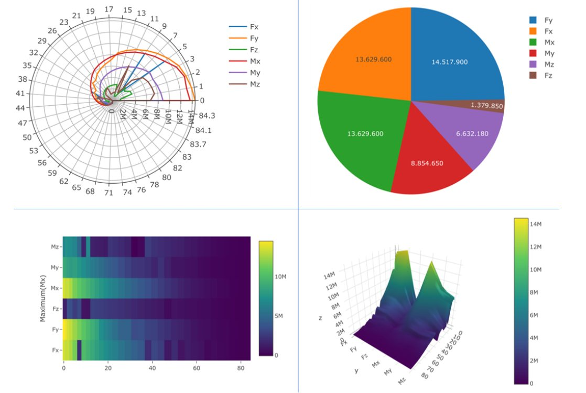

01Agile Data Development
2018 — 2022Eine Windkraftanlage zu entwickeln heißt: Tausende Parameter, CAD-Dateien und Simulationsergebnisse wandern zwischen Spezialisten hin und her — oft per E-Mail. Wir haben dafür eine zentrale Datenquelle gebaut, generiert aus einem Modell, das der Kunde selbst ändern kann.
- Rolle
- Leitende Entwicklung
- Partner
- WZL · MSE · Bewind
- Förderung
- Exzellenzcluster IoP
- Gebaut mit
- MontiGem · CD2GUI
Hintergrund: Teil 1 · Modellgetriebene Softwareentwicklung →

-
Das Problem
In der Entwicklung einer Windkraftanlage arbeiten viele Disziplinen an derselben Maschine: Mechanik, Elektrik, Regelung, Simulation. Ihre Parameter hängen voneinander ab, und ein an einer Stelle geänderter Wert muss alle anderen erreichen. In der Praxis wanderte er als E-Mail-Anhang und Datei auf einzelnen Laptops — veraltete Werte schlichen sich ein, alte Simulationsergebnisse waren schwer wiederzufinden. Agile und plangetriebene Entwicklung mussten auf einer verlässlichen Datenbasis zusammenkommen.
-
Das Cockpit
Das Ergebnis ist ein Web-Cockpit — ein digitaler Zwilling der Entwicklung, „as designed“ —, in dem Ingenieur:innen Parameter, CAD-Dateien und Simulationsergebnisse nachschlagen, bearbeiten, versionieren und freigeben. Änderungshistorie und Archiv, ein Freigabe-Lebenszyklus (Entwurf → Review → freigegeben → veraltet) mit der Prüfung, dass freigegebene Objekte nur auf freigegebene verweisen, und eine Diff-Ansicht machen jeden Wert nachvollziehbar. Eine Python-Bibliothek bindet die Engineering-Werkzeuge selbst an — Rhino, Ansys, SpaceClaim —, sodass sie die Daten über die API statt über lokale Dateien lesen und schreiben.
-
Aus einem Klassendiagramm generiert
ADD war das erste echte Projekt für CD2GUI, eine Erweiterung von MontiGem, die die Oberfläche aus dem Klassendiagramm ableitet: für jede Klasse eine Navigations-, eine Übersichts- und eine Bearbeitungsseite. Die Ingenieur:innen hatten nach wenigen Tagen einen klickbaren Prototyp, und der Kunde konnte das Datenschema erweitern — es wuchs auf über 120 Klassen und 200 Beziehungen — und einfach neu generieren. Wo generische Seiten nicht reichten, kamen handgeschriebene GUI-Modelle und Diagramme hinzu, etwa die Ansichten von Simulationsergebnissen unten.
120+Klassen200+Beziehungen3generierte Seiten pro Klasse
Simulationsergebnisse der Anlagenlasten, im Cockpit visualisiert.
- MNN+22
- BGK+24
- DHM+22